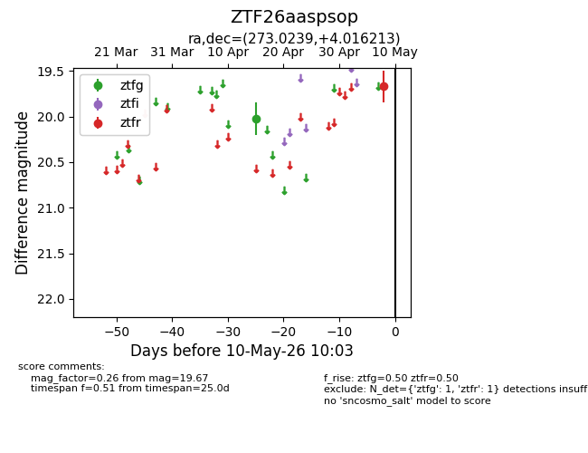
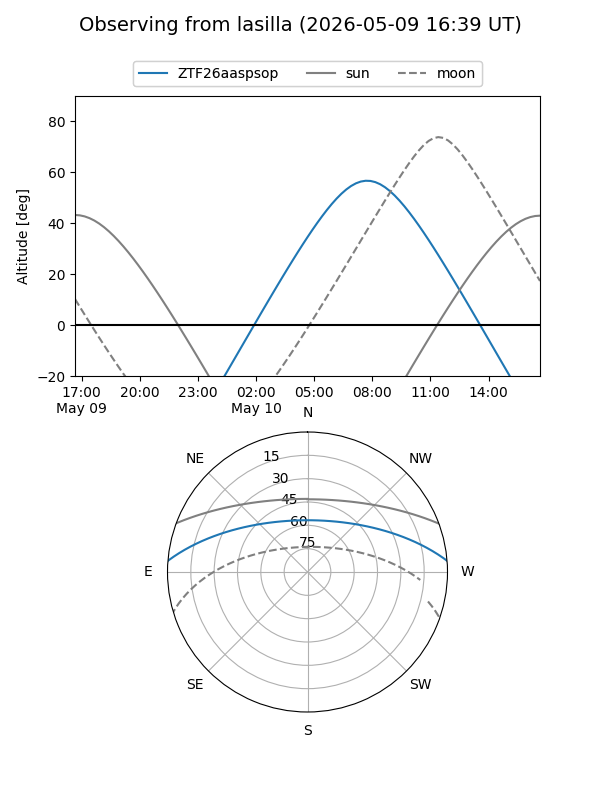
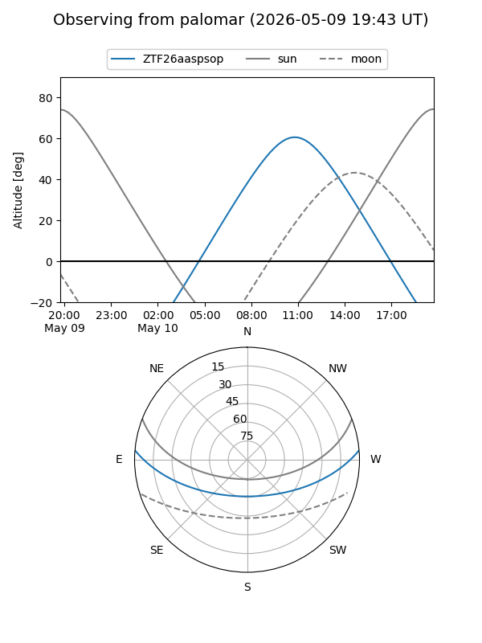
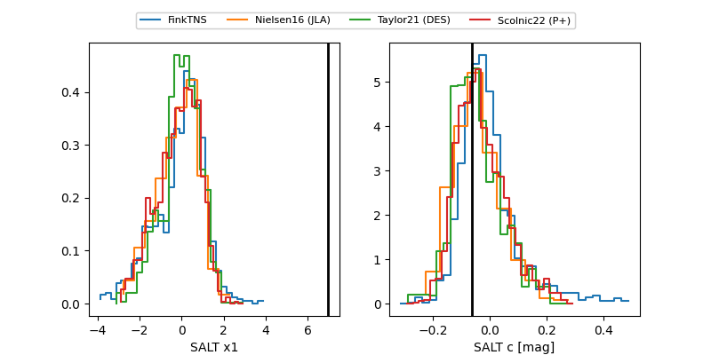

ZTF26aaspsop
Target ZTF26aaspsop at 2026-05-10 10:04
Aliases and brokers:
FINK: link
Lasair: link
ALeRCE: link
alt names
ZTF26aaspsop (ztf,fink_ztf)
Coordinates:
equatorial (ra, dec) = 273.0239,+4.01621
equatorial (HMS+DMS) = 18:12:05.72,+04:00:58.37
galactic (l, b) = (32.0362,+10.57910)
Flags:
Photometry:
last ztfg=20.03, ztfr=19.67
1 ztfg, 1 ztfr detections
Lightcurve

Visibility


Additional plots
